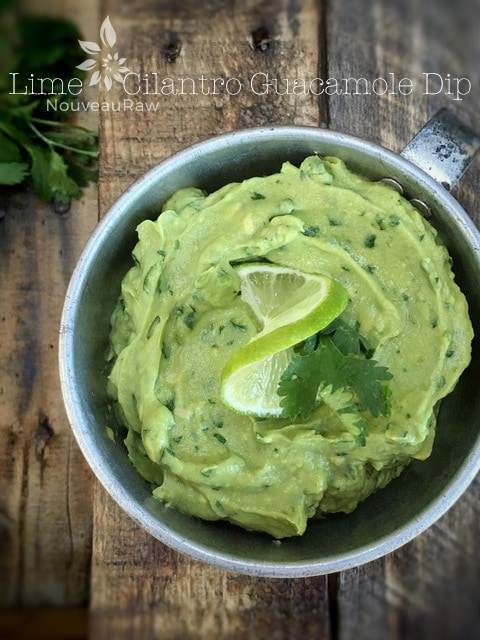

Lime Cilantro Guacamole Dip

~ raw, vegan, gluten-free, nut-free ~
This guacamole is chocked full of the classic fresh ingredients we all love, all smothered in creamy, ripe avocados. It’s super quick and easy to make… just what we need in our fast-paced life.
The key to a great guacamole is to use fresh ingredients and ripe avocados. From there you can create a dip that is sure to satisfy your taste buds. But before you head to the grocery store to gather your ingredients lets familiarize ourselves with the different varieties of avocados.
Here are a few that you might run into… The Hass = California avocado is available year-round and has a rich flavor and creamy texture. This is the best variety for guacamole, but it turns a bit mushy in salads. The skin turns almost black when the avocado is ripe—this, unfortunately, can camouflage bad bruises.
The Pinkerton peels easily and has excellent flavor. The Reed is a large, round avocado that slips easily from the peel, and has very good flavor and texture. It will stay firm even when ripe, so it’s great in salads, but not a good choice if you’re making guacamole.
The Fuerte = Florida avocado is in season from late fall through spring. It’s not quite as buttery as the Hass avocado, but its flavor is excellent.
The Bacon avocado is a sweet, smooth-skinned variety that shows up in the middle of winter, but isn’t as flavorful as some of the other avocados.
It’s time to guac and roll but first I wanted to point out that it is a good idea to taste your guacamole as you’re making it. Avocados can take a fair amount of lime juice and cilantro, but since both of these ingredients can vary in strength, it’s a good idea to taste as you go. Homemade guacamole is like a snowflake… you never see the same one twice. This is due to the fact that the flavor and texture of avocados vary widely. I hope you enjoy this recipe. Many blessings, amie sue
Yields 1 1/2 cups
- 3 avocados, halved, seeded and peeled
- 1 lime, juiced
- 1/2 tsp Himalayan pink salt
- 1/2 tsp ground cumin
- 1/2 tsp cayenne
- 1/2 medium onion, diced
- 1 Tbsp fresh, chopped cilantro
- 1 clove garlic, minced
Preparation:
- In a large bowl place the avocado flesh and lime juice, mash together with a fork or potato masher. Then mash in the salt, cumin, and cayenne.
- Fold in the onions, cilantro, and garlic.
- Let sit at room temperature for 1 hour and then serve. This will give the flavors time to meld and deepen.
- Keep store in the fridge for 1-2 days.
The Institute of Culinary Ingredients™
- What is Himalayan pink salt and does it really matter? Click (here) to read more about it.
- Learn how to select good avocados! Click (here).
- When working with fresh ingredients it is important to taste test as you build a recipe. Learn why (here).
© AmieSue.com